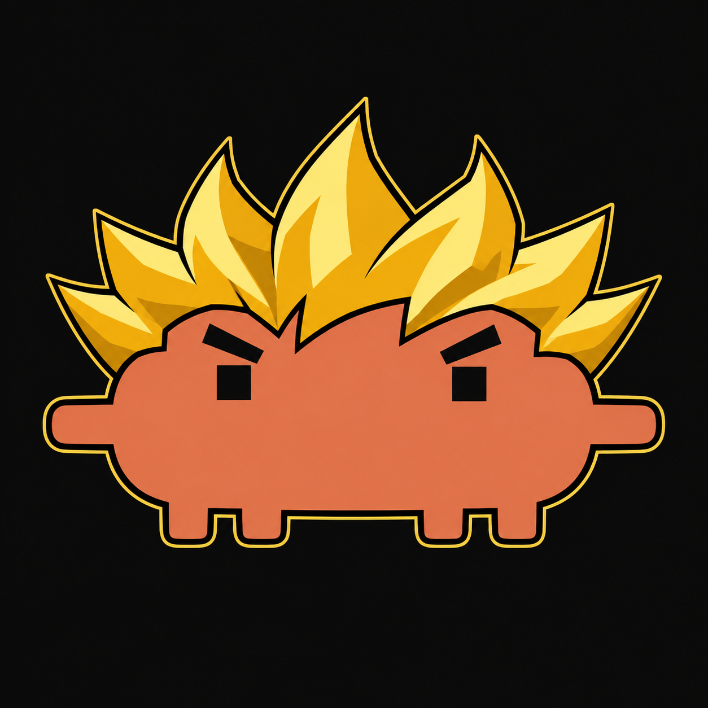
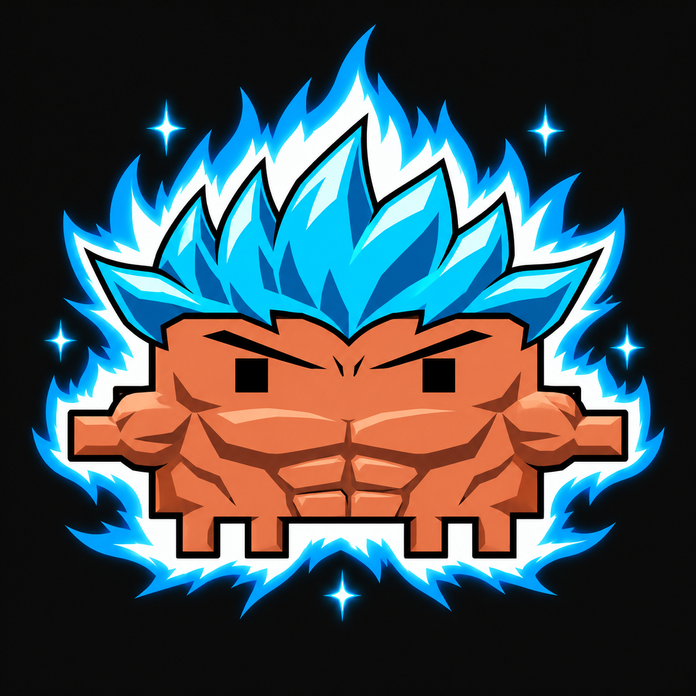

<title>Ngọc Rồng Mascot Prompts</title>
<meta name="claude:viewport-fit-sides" content="cover">
<link rel="preconnect" href="https://fonts.googleapis.com">
<link rel="stylesheet" href="https://fonts.googleapis.com/css2?family=Bricolage+Grotesque:opsz,wght@12..96,700&family=IBM+Plex+Sans:wght@400;600&family=IBM+Plex+Mono&display=swap">
<style>
/* một cột đọc dọc: brief → mục lục → thẻ prompt theo nhân vật; tối hẳn theo theme Claude IDE Dragonball */
:root { --bg:#0E0E0E; --card:#191716; --ink:#E8E6E3; --muted:#B5AFA8; --accent:#E08A6D; --ball:#F5A623; --line:#2C2826;
  --display:"Bricolage Grotesque", "Avenir Next", sans-serif; --body:"IBM Plex Sans", -apple-system, system-ui, sans-serif;
  --mono:"IBM Plex Mono", ui-monospace, Menlo, monospace; color-scheme:dark }
body { background:var(--bg); color:var(--ink); font:15px/1.55 var(--body); margin:0;
  padding-left:max(16px, env(safe-area-inset-left, 0px)); padding-right:max(16px, env(safe-area-inset-right, 0px)); padding-block:24px 64px }
main { max-width:880px; margin:0 auto; display:grid; gap:14px }
h1 { font:700 clamp(30px, 6vw, 44px)/1.05 var(--display); margin:0; text-wrap:balance }
h1 b { color:var(--ball) }
h2 { font:700 24px/1.2 var(--display); color:var(--accent); margin:28px 0 0; text-wrap:balance }
h2 small { display:block; font:400 14px var(--body); color:var(--muted) }
h3 { font:600 16px var(--mono); margin:0 }
p { margin:0; max-width:65ch }
.brief { border:1px solid var(--line); border-radius:10px; padding:14px; display:grid; gap:8px }
.brief h2 { margin:0; font-size:18px }
nav { display:flex; flex-wrap:wrap; gap:8px }
nav a, .copy { background:var(--accent); color:#120C0A; border:0; border-radius:999px; padding:6px 14px; font:600 14px var(--body);
  text-decoration:none; cursor:pointer }
nav a:focus-visible, .copy:focus-visible, .refs a:focus-visible { outline:2px solid var(--ball); outline-offset:2px }
article { background:var(--card); border-radius:10px; padding:14px; display:grid; gap:10px; min-width:0 }
.refs { display:flex; flex-wrap:wrap; gap:10px; color:var(--muted); font:13px var(--mono) }
.refs a { display:grid; gap:4px; color:var(--muted); text-decoration:none; justify-items:start }
.refs img { height:96px; max-width:100%; border-radius:6px; background:#000 }
.refs em { align-self:center; font-style:normal; border:1px dashed var(--line); border-radius:6px; padding:8px }
pre { white-space:pre-wrap; overflow-wrap:anywhere; background:var(--bg); border-radius:8px; padding:12px; margin:0; font:13px/1.5 var(--mono) }
.copy { justify-self:start }
@media (prefers-reduced-motion: no-preference) { .copy { transition:filter .15s } .copy:hover { filter:brightness(1.1) } }
</style>
<main>
<h1>Ngọc Rồng <b>❶–❼</b> mascot prompts</h1>
<p>Bộ prompt và ảnh mẫu để tạo các con mascot biến hình theo mức effort cho Claude, Codex và agy. Bấm ảnh để mở cỡ lớn, kéo thả vào ô chat, rồi dán prompt.</p>
<section class="brief"><h2>Brief for the image model</h2><p>You are making a set of square anime power-up illustrations of three small mascots (Claude, Codex, agy), one image per card below. For each card: attach the listed reference images, use the prompt exactly, generate one image, and name it with the card title (for example claude-medium.png). Make the -base card of a mascot before its six levels and use that result as Image 1. Keep every image on a plain flat #0E0E0E background with no text.</p><button type="button" class="copy">Copy brief</button></section>
<nav><a href="#claude">Claude</a><a href="#codex">Codex (GPT)</a><a href="#agy">agy</a></nav>
<h2 id="claude">Claude · 4 cấp còn thiếu <small>sửa trên ảnh thân có sẵn</small></h2><article><h3>claude-medium</h3><div class="refs"><a href="3-than-gay.png" target="_blank"><span>3-than-gay.png</span></a></div><pre>Keep the creature&#x27;s body EXACTLY as in the attached image: same body, muscles, arms, legs, eyes, black outline, size and position. Change ONLY the hair and the effects described here. Keep the plain flat #0E0E0E background and the same style. Hair and effects: Sharper spiky hair in a DEEP DARK GOLD. Only a thin golden outline glow and 2-3 tiny blue-white electric sparks near the hair. No flames.</pre><button type="button" class="copy">Copy prompt</button></article><article><h3>claude-high</h3><div class="refs"><a href="2-than-max.png" target="_blank"><span>2-than-max.png</span></a></div><pre>Keep the creature&#x27;s body EXACTLY as in the attached image: same body, muscles, arms, legs, eyes, black outline, size and position. Change ONLY the hair and the effects described here. Keep the plain flat #0E0E0E background and the same style. Hair and effects: Very LONG golden-yellow spiky mane flowing down behind the body almost to the ground, no eyebrows. Only a thin golden outline glow and 4-5 small yellow electric sparks. Restrained.</pre><button type="button" class="copy">Copy prompt</button></article><article><h3>claude-xhigh</h3><div class="refs"><a href="2-than-max.png" target="_blank"><span>2-than-max.png</span></a></div><pre>Keep the creature&#x27;s body EXACTLY as in the attached image: same body, muscles, arms, legs, eyes, black outline, size and position. Change ONLY the hair and the effects described here. Keep the plain flat #0E0E0E background and the same style. Hair and effects: SHORT spiky CRIMSON RED hair. A soft red-orange divine flame aura and a few red embers floating.</pre><button type="button" class="copy">Copy prompt</button></article><article><h3>claude-ultracode</h3><div class="refs"><a href="2-than-max.png" target="_blank"><span>2-than-max.png</span></a></div><pre>Keep the creature&#x27;s body EXACTLY as in the attached image: same body, muscles, arms, legs, eyes, black outline, size and position. Change ONLY the hair and the effects described here. Keep the plain flat #0E0E0E background and the same style. Hair and effects: SHORT spiky SILVER-WHITE hair, eyes glow silver-white. A tall silvery-white and pale blue flame aura with floating light particles, calm and god-like, the most radiant of all.</pre><button type="button" class="copy">Copy prompt</button></article><h2 id="codex">Codex (GPT) <small>kiểu Cađíc: kiêu hãnh, khoanh tay, tóc dựng thẳng có mỏm chữ V trước trán</small></h2><article><h3>codex-base</h3><div class="refs"><a href="6-icon-codex.png" target="_blank"><span>6-icon-codex.png</span></a><a href="4-mau-low.png" target="_blank"><span>4-mau-low.png</span></a></div><pre>Image 1 is an app icon, Image 2 is a style reference. Design a mascot: a small puffy cloud-shaped creature built from the Codex app icon in Image 1: a scalloped cloud body with a soft lavender-to-royal-blue gradient (#A9A4FF to #3B4CF5), its face is the icon&#x27;s white terminal prompt &#x27;&gt;_&#x27; (the &#x27;&gt;&#x27; is a narrowed eye, the &#x27;_&#x27; a flat mouth), tiny stubby arms, two tiny feet. No hair yet, standing calmly. Personality: the proud elite rival. Match the drawing style of Image 2 (outline weight, cel shading, background) but NOT its character. 2D anime power-up illustration, thick clean black outlines, flat cel shading with 2-3 tones, no gradients on the body, centred, full body, facing the viewer. Plain flat solid #0E0E0E background, nothing else, no text, no human, no existing anime character. Square 1:1 with margin around the figure.</pre><button type="button" class="copy">Copy prompt</button></article><article><h3>codex-low</h3><div class="refs"><em>(codex-base vừa tạo)</em><a href="4-mau-low.png" target="_blank"><span>4-mau-low.png</span></a></div><pre>Image 1 is the mascot, Image 2 is a style reference for the power-up look only. Draw the mascot from Image 1 powering up, same face and colours. Make the body FAT and round, one even colour. Personality: the proud elite rival. Arms crossed, chin up, smug confident smirk. Hair always rises straight up like one tall flame with a sharp V-shaped widow&#x27;s peak at the forehead. The hair is a big anime power-up hairdo covering the WHOLE top of the head edge to edge - thick sharp spikes, darker shade side and lighter highlight side; never a small tuft or a crown. Short spiky GOLDEN-YELLOW hair. A calm thin golden outline glow. No lightning. 2D anime power-up illustration, thick clean black outlines, flat cel shading with 2-3 tones, no gradients on the body, centred, full body, facing the viewer. Plain flat solid #0E0E0E background, nothing else, no text, no human, no existing anime character. Square 1:1 with margin around the figure.</pre><button type="button" class="copy">Copy prompt</button></article><article><h3>codex-medium</h3><div class="refs"><em>(codex-base vừa tạo)</em><a href="5-mau-max.png" target="_blank"><span>5-mau-max.png</span></a></div><pre>Image 1 is the mascot, Image 2 is a style reference for the power-up look only. Draw the mascot from Image 1 powering up, same face and colours. Make the body lean and toned with subtle muscles. Personality: the proud elite rival. Arms crossed, chin up, smug confident smirk. Hair always rises straight up like one tall flame with a sharp V-shaped widow&#x27;s peak at the forehead. The hair is a big anime power-up hairdo covering the WHOLE top of the head edge to edge - thick sharp spikes, darker shade side and lighter highlight side; never a small tuft or a crown. Sharper spiky hair in a DEEP DARK GOLD. Only a thin golden outline glow and 2-3 tiny blue-white electric sparks near the hair. No flames. 2D anime power-up illustration, thick clean black outlines, flat cel shading with 2-3 tones, no gradients on the body, centred, full body, facing the viewer. Plain flat solid #0E0E0E background, nothing else, no text, no human, no existing anime character. Square 1:1 with margin around the figure.</pre><button type="button" class="copy">Copy prompt</button></article><article><h3>codex-high</h3><div class="refs"><em>(codex-base vừa tạo)</em><a href="5-mau-max.png" target="_blank"><span>5-mau-max.png</span></a></div><pre>Image 1 is the mascot, Image 2 is a style reference for the power-up look only. Draw the mascot from Image 1 powering up, same face and colours. Make the body HEAVILY MUSCULAR - big pecs, six-pack, bulging arms. Personality: the proud elite rival. Arms crossed, chin up, smug confident smirk. Hair always rises straight up like one tall flame with a sharp V-shaped widow&#x27;s peak at the forehead. The hair is a big anime power-up hairdo covering the WHOLE top of the head edge to edge - thick sharp spikes, darker shade side and lighter highlight side; never a small tuft or a crown. Very LONG golden-yellow spiky mane flowing down behind the body almost to the ground, no eyebrows. Only a thin golden outline glow and 4-5 small yellow electric sparks. Restrained. 2D anime power-up illustration, thick clean black outlines, flat cel shading with 2-3 tones, no gradients on the body, centred, full body, facing the viewer. Plain flat solid #0E0E0E background, nothing else, no text, no human, no existing anime character. Square 1:1 with margin around the figure.</pre><button type="button" class="copy">Copy prompt</button></article><article><h3>codex-xhigh</h3><div class="refs"><em>(codex-base vừa tạo)</em><a href="5-mau-max.png" target="_blank"><span>5-mau-max.png</span></a></div><pre>Image 1 is the mascot, Image 2 is a style reference for the power-up look only. Draw the mascot from Image 1 powering up, same face and colours. Make the body HEAVILY MUSCULAR - big pecs, six-pack, bulging arms. Personality: the proud elite rival. Arms crossed, chin up, smug confident smirk. Hair always rises straight up like one tall flame with a sharp V-shaped widow&#x27;s peak at the forehead. The hair is a big anime power-up hairdo covering the WHOLE top of the head edge to edge - thick sharp spikes, darker shade side and lighter highlight side; never a small tuft or a crown. SHORT spiky CRIMSON RED hair. A soft red-orange divine flame aura and a few red embers floating. 2D anime power-up illustration, thick clean black outlines, flat cel shading with 2-3 tones, no gradients on the body, centred, full body, facing the viewer. Plain flat solid #0E0E0E background, nothing else, no text, no human, no existing anime character. Square 1:1 with margin around the figure.</pre><button type="button" class="copy">Copy prompt</button></article><article><h3>codex-max</h3><div class="refs"><em>(codex-base vừa tạo)</em><a href="5-mau-max.png" target="_blank"><span>5-mau-max.png</span></a></div><pre>Image 1 is the mascot, Image 2 is a style reference for the power-up look only. Draw the mascot from Image 1 powering up, same face and colours. Make the body HEAVILY MUSCULAR - big pecs, six-pack, bulging arms. Personality: the proud elite rival. Arms crossed, chin up, smug confident smirk. Hair always rises straight up like one tall flame with a sharp V-shaped widow&#x27;s peak at the forehead. The hair is a big anime power-up hairdo covering the WHOLE top of the head edge to edge - thick sharp spikes, darker shade side and lighter highlight side; never a small tuft or a crown. SHORT upright spiky bright CYAN-BLUE hair. A sharp blue flame aura with a white core and glowing blue sparkles. 2D anime power-up illustration, thick clean black outlines, flat cel shading with 2-3 tones, no gradients on the body, centred, full body, facing the viewer. Plain flat solid #0E0E0E background, nothing else, no text, no human, no existing anime character. Square 1:1 with margin around the figure.</pre><button type="button" class="copy">Copy prompt</button></article><article><h3>codex-ultracode</h3><div class="refs"><em>(codex-base vừa tạo)</em><a href="5-mau-max.png" target="_blank"><span>5-mau-max.png</span></a></div><pre>Image 1 is the mascot, Image 2 is a style reference for the power-up look only. Draw the mascot from Image 1 powering up, same face and colours. Make the body HEAVILY MUSCULAR - big pecs, six-pack, bulging arms. Personality: the proud elite rival. Arms crossed, chin up, smug confident smirk. Hair always rises straight up like one tall flame with a sharp V-shaped widow&#x27;s peak at the forehead. The hair is a big anime power-up hairdo covering the WHOLE top of the head edge to edge - thick sharp spikes, darker shade side and lighter highlight side; never a small tuft or a crown. SHORT spiky SILVER-WHITE hair, eyes glow silver-white. A tall silvery-white and pale blue flame aura with floating light particles, calm and god-like, the most radiant of all. 2D anime power-up illustration, thick clean black outlines, flat cel shading with 2-3 tones, no gradients on the body, centred, full body, facing the viewer. Plain flat solid #0E0E0E background, nothing else, no text, no human, no existing anime character. Square 1:1 with margin around the figure.</pre><button type="button" class="copy">Copy prompt</button></article><h2 id="agy">agy (Antigravity) <small>kiểu Broly: khổng lồ, cơ bắp cuồn cuộn, tóc dài hoang dã, hào quang ánh xanh lá</small></h2><article><h3>agy-base</h3><div class="refs"><a href="7-icon-agy.png" target="_blank"><span>7-icon-agy.png</span></a><a href="4-mau-low.png" target="_blank"><span>4-mau-low.png</span></a></div><pre>Image 1 is an app icon, Image 2 is a style reference. Design a mascot: a creature built from the Antigravity app icon in Image 1: a tall rounded arch shape like a smooth letter A without the crossbar, the arch&#x27;s two ends are its legs, the rounded top is its head with two small white eyes, the body keeps the icon&#x27;s gradient (green and yellow-red on top flowing into Google blue #4285F4 down the legs), tiny stubby arms. No hair yet, standing calmly. Personality: the legendary berserker. Match the drawing style of Image 2 (outline weight, cel shading, background) but NOT its character. 2D anime power-up illustration, thick clean black outlines, flat cel shading with 2-3 tones, no gradients on the body, centred, full body, facing the viewer. Plain flat solid #0E0E0E background, nothing else, no text, no human, no existing anime character. Square 1:1 with margin around the figure.</pre><button type="button" class="copy">Copy prompt</button></article><article><h3>agy-low</h3><div class="refs"><em>(agy-base vừa tạo)</em><a href="4-mau-low.png" target="_blank"><span>4-mau-low.png</span></a></div><pre>Image 1 is the mascot, Image 2 is a style reference for the power-up look only. Draw the mascot from Image 1 powering up, same face and colours. Make the body FAT and round, one even colour. Personality: the legendary berserker. Hulking and towering, wild untamed spiky hair that sweeps back and outward, a gold ring around its neck and gold armbands, a faint lime-green tint at the edge of every aura, roaring with power. The hair is a big anime power-up hairdo covering the WHOLE top of the head edge to edge - thick sharp spikes, darker shade side and lighter highlight side; never a small tuft or a crown. Short spiky GOLDEN-YELLOW hair. A calm thin golden outline glow. No lightning. 2D anime power-up illustration, thick clean black outlines, flat cel shading with 2-3 tones, no gradients on the body, centred, full body, facing the viewer. Plain flat solid #0E0E0E background, nothing else, no text, no human, no existing anime character. Square 1:1 with margin around the figure.</pre><button type="button" class="copy">Copy prompt</button></article><article><h3>agy-medium</h3><div class="refs"><em>(agy-base vừa tạo)</em><a href="5-mau-max.png" target="_blank"><span>5-mau-max.png</span></a></div><pre>Image 1 is the mascot, Image 2 is a style reference for the power-up look only. Draw the mascot from Image 1 powering up, same face and colours. Make the body lean and toned with subtle muscles. Personality: the legendary berserker. Hulking and towering, wild untamed spiky hair that sweeps back and outward, a gold ring around its neck and gold armbands, a faint lime-green tint at the edge of every aura, roaring with power. The hair is a big anime power-up hairdo covering the WHOLE top of the head edge to edge - thick sharp spikes, darker shade side and lighter highlight side; never a small tuft or a crown. Sharper spiky hair in a DEEP DARK GOLD. Only a thin golden outline glow and 2-3 tiny blue-white electric sparks near the hair. No flames. 2D anime power-up illustration, thick clean black outlines, flat cel shading with 2-3 tones, no gradients on the body, centred, full body, facing the viewer. Plain flat solid #0E0E0E background, nothing else, no text, no human, no existing anime character. Square 1:1 with margin around the figure.</pre><button type="button" class="copy">Copy prompt</button></article><article><h3>agy-high</h3><div class="refs"><em>(agy-base vừa tạo)</em><a href="5-mau-max.png" target="_blank"><span>5-mau-max.png</span></a></div><pre>Image 1 is the mascot, Image 2 is a style reference for the power-up look only. Draw the mascot from Image 1 powering up, same face and colours. Make the body HEAVILY MUSCULAR - big pecs, six-pack, bulging arms. Personality: the legendary berserker. Hulking and towering, wild untamed spiky hair that sweeps back and outward, a gold ring around its neck and gold armbands, a faint lime-green tint at the edge of every aura, roaring with power. The hair is a big anime power-up hairdo covering the WHOLE top of the head edge to edge - thick sharp spikes, darker shade side and lighter highlight side; never a small tuft or a crown. Very LONG golden-yellow spiky mane flowing down behind the body almost to the ground, no eyebrows. Only a thin golden outline glow and 4-5 small yellow electric sparks. Restrained. 2D anime power-up illustration, thick clean black outlines, flat cel shading with 2-3 tones, no gradients on the body, centred, full body, facing the viewer. Plain flat solid #0E0E0E background, nothing else, no text, no human, no existing anime character. Square 1:1 with margin around the figure.</pre><button type="button" class="copy">Copy prompt</button></article><article><h3>agy-xhigh</h3><div class="refs"><em>(agy-base vừa tạo)</em><a href="5-mau-max.png" target="_blank"><span>5-mau-max.png</span></a></div><pre>Image 1 is the mascot, Image 2 is a style reference for the power-up look only. Draw the mascot from Image 1 powering up, same face and colours. Make the body HEAVILY MUSCULAR - big pecs, six-pack, bulging arms. Personality: the legendary berserker. Hulking and towering, wild untamed spiky hair that sweeps back and outward, a gold ring around its neck and gold armbands, a faint lime-green tint at the edge of every aura, roaring with power. The hair is a big anime power-up hairdo covering the WHOLE top of the head edge to edge - thick sharp spikes, darker shade side and lighter highlight side; never a small tuft or a crown. SHORT spiky CRIMSON RED hair. A soft red-orange divine flame aura and a few red embers floating. 2D anime power-up illustration, thick clean black outlines, flat cel shading with 2-3 tones, no gradients on the body, centred, full body, facing the viewer. Plain flat solid #0E0E0E background, nothing else, no text, no human, no existing anime character. Square 1:1 with margin around the figure.</pre><button type="button" class="copy">Copy prompt</button></article><article><h3>agy-max</h3><div class="refs"><em>(agy-base vừa tạo)</em><a href="5-mau-max.png" target="_blank"><span>5-mau-max.png</span></a></div><pre>Image 1 is the mascot, Image 2 is a style reference for the power-up look only. Draw the mascot from Image 1 powering up, same face and colours. Make the body HEAVILY MUSCULAR - big pecs, six-pack, bulging arms. Personality: the legendary berserker. Hulking and towering, wild untamed spiky hair that sweeps back and outward, a gold ring around its neck and gold armbands, a faint lime-green tint at the edge of every aura, roaring with power. The hair is a big anime power-up hairdo covering the WHOLE top of the head edge to edge - thick sharp spikes, darker shade side and lighter highlight side; never a small tuft or a crown. SHORT upright spiky bright CYAN-BLUE hair. A sharp blue flame aura with a white core and glowing blue sparkles. 2D anime power-up illustration, thick clean black outlines, flat cel shading with 2-3 tones, no gradients on the body, centred, full body, facing the viewer. Plain flat solid #0E0E0E background, nothing else, no text, no human, no existing anime character. Square 1:1 with margin around the figure.</pre><button type="button" class="copy">Copy prompt</button></article><article><h3>agy-ultracode</h3><div class="refs"><em>(agy-base vừa tạo)</em><a href="5-mau-max.png" target="_blank"><span>5-mau-max.png</span></a></div><pre>Image 1 is the mascot, Image 2 is a style reference for the power-up look only. Draw the mascot from Image 1 powering up, same face and colours. Make the body HEAVILY MUSCULAR - big pecs, six-pack, bulging arms. Personality: the legendary berserker. Hulking and towering, wild untamed spiky hair that sweeps back and outward, a gold ring around its neck and gold armbands, a faint lime-green tint at the edge of every aura, roaring with power. The hair is a big anime power-up hairdo covering the WHOLE top of the head edge to edge - thick sharp spikes, darker shade side and lighter highlight side; never a small tuft or a crown. SHORT spiky SILVER-WHITE hair, eyes glow silver-white. A tall silvery-white and pale blue flame aura with floating light particles, calm and god-like, the most radiant of all. 2D anime power-up illustration, thick clean black outlines, flat cel shading with 2-3 tones, no gradients on the body, centred, full body, facing the viewer. Plain flat solid #0E0E0E background, nothing else, no text, no human, no existing anime character. Square 1:1 with margin around the figure.</pre><button type="button" class="copy">Copy prompt</button></article>
</main>
<script>
for (const b of document.querySelectorAll('.copy')) b.addEventListener('click', async () => {
  const src = b.previousElementSibling.tagName === 'PRE' ? b.previousElementSibling : b.parentElement.querySelector('p');
  try { await navigator.clipboard.writeText(src.innerText); b.textContent = 'Copied'; }
  catch { getSelection().selectAllChildren(src); b.textContent = 'Selected, press ⌘C'; }
});
</script>